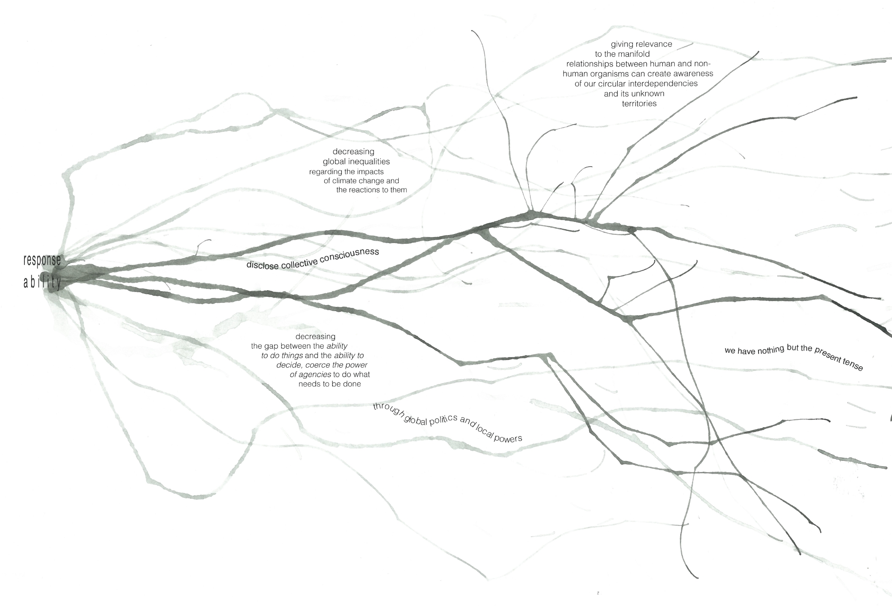
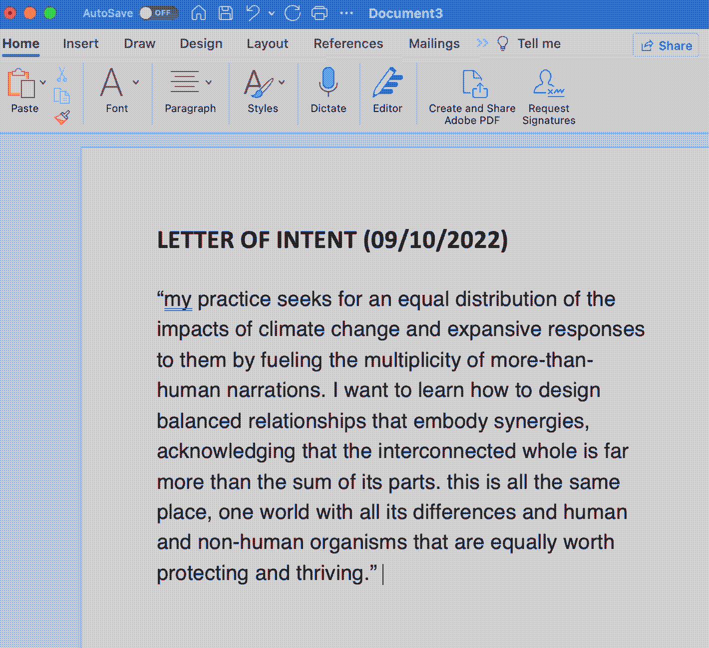
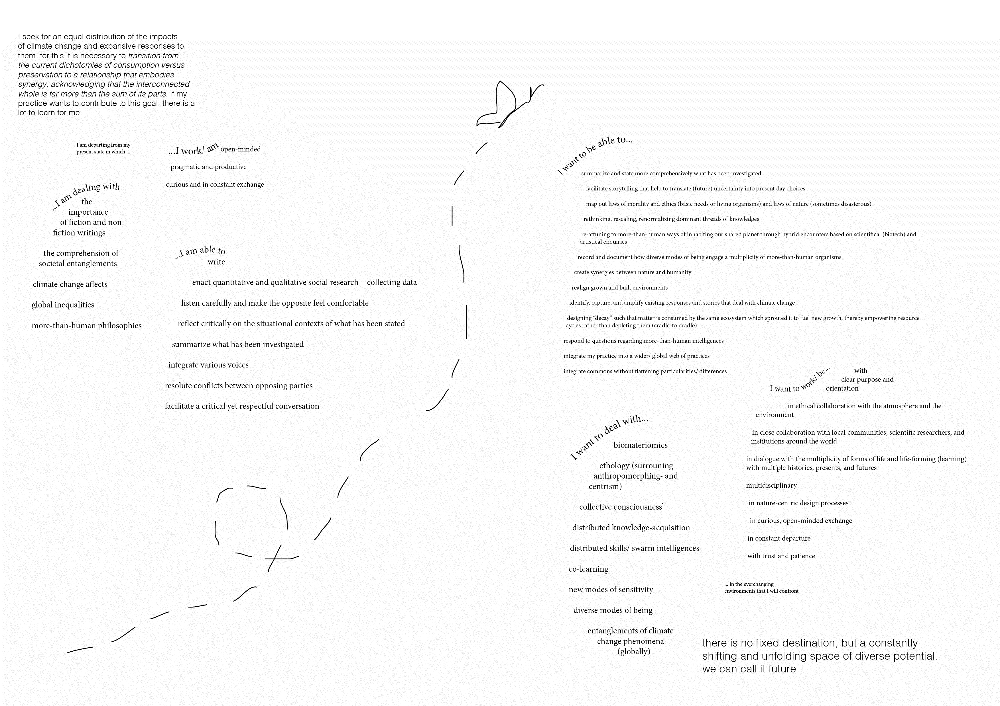
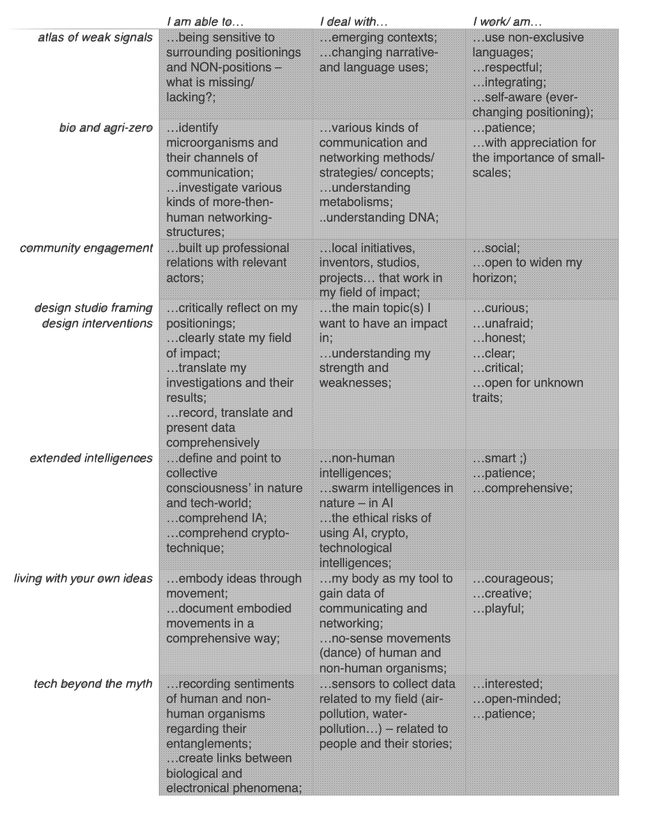

¶
🗓 Week 1 / 3 - 7 October 2022
bootcamp¶
this first week, we are thrown into the main ambitions of this master program. we familiarized ourselves with the physical and digital spaces we will inhabit (studio, lab and neighborhood). following the chosen military vocabulary, we were asked to introduce ourselves by making a poster about our fights…
what is my fight?¶

I am against any kind of violence. even if I understand the bubble-like qualities, this intense experience brought with it, I would like to rephrase: I work against global inequalities and for an equal distribution of the impacts of climate change and expansive responses to them.
climate change affects differently in different areas of the world. I am a fan of differences; I don’t believe with homogeneity we will get anywhere. yet there is a clear distinction between difference and inequality. that the effects of climate change lead to threat and death of some human and non-human organisms, and to prosperity and luxury to others is not difference but the result of unequal distribution of resource-access and -consumption, knowledge-acquisition and -production, available adaptation- and coping-mechanisms, -strategies, -tools, and so on.
I am convinced that there are enough resources (human-brains that think, potent materials to be used responsibly, already developed, and tested mechanisms and strategies that will function as tools…) to prevent the effects of climate change leading to death of any human and non-human organisms. but instead of using the power that some have (because of access to these resources) to establish equally safe and thriving places everywhere, the effects of climate change are becoming more extreme.
why is that so ? I was educated as a sociologist and an artist; I cannot give an answer that would suffice the complexity of human behavior. but there are two ways I can approach the question:
firstly, through what I experience myself: when things are unknown, they seem to be more difficult to the extent that we often ignore them. what we don’t know, seems vast and impossible to access. similarly, we treat climate change. we easily ignore what we have not experienced or what is out of our immediate reach and cling to the ways and techniques we have experienced ourselves in our immediate environments. in a disconnected, individualist, capitalist world like the one I was raised and socialized in, this has fatal consequences. the knowledge of only two generations before us gets lost because we ourselves have not experienced its benefits; new technologies have freed us from thinking further than our own lives, the next year, the people living 15 km away, or even in the next street. we barely can emphasize with more than what we can touch. this happens on various scales, on the personal as well as on the political.
secondly, I can approach the question through the thoughts of previous thinkers. according to Zygmunt Bauman, power is the ability to have things done and politics is the ability to decide which things are to be done. his analysis of contemporaneity conclude that whereas earlier the abilities of power and politics were united in one place (nation-state government), nowadays, power has evaporated into global cyber-worlds while politics remained on local, nation-state levels. politics have failed to emigrate into the space of flows that Manuel Castells describes as the digital turn allowing distant synchronous, real-time interactions. power is today separated from politics and is in the hands of those who manage to navigate the systems of money and digital connectivity. it is in the hands of those who have the monopoly of telling stories that are listened to. following this line of theory, the major source of contemporary fear is that no one is in control and those in power just keep on telling their stories.
to develop comprehensive and expansive responses to the impacts of global environmental changes, we must use and switch what Bauman has analyzed: establishing global politics and local power. that entails creating guidelines that open up unconditional spaces for a variety of stories to be told and heard; to allow the experience of the vastness of the unknown.
my practice seeks for an equal distribution of the impacts of climate change and expansive responses to them by fueling the multiplicity of more-than-human narrations. I want to learn how to facilitate spaces for balanced relationships that embody synergies, acknowledging that the interconnected whole is made out of multiple parts. this is all the same place, one world with all its differences and human and non-human organisms that are equally worth protecting and thriving.
in the end this has something to do with the notion of relevance. relevance as subjective and relative, determined by its space-time conditions. what do we learn to know and what do we not? what gets relevance to be known/ be experienced? giving relevance to the manifold relationships between human and non-human organisms can create awareness of our circular interdependencies and its unknown territories.
influences:
Anna Tsing, the mushroom at the end of the world https://www.academia.edu/40320405/The_Mushroom_at_the_End_of_the_World_Anna_Tsing (2015), https://www.youtube.com/watch?v=f8MhBwsKdJA (2021), …
Donna Haraway (string figures, speculative fabulation), staying with the trouble, https://www.dukeupress.edu/staying-with-the-trouble (2016), https://www.youtube.com/watch?v=GrYA7sMQaBQ (2017), https://www.youtube.com/watch?v=zFGXTQnJETg (2016), …
Manuel Castells (space of flows), https://tspace.library.utoronto.ca/bitstream/1807/94355/1/184%20Castells%201991%20The%20Informational%20City.pdf (1991), …
Timothy Morton (dark ecology), all art is ecological, https://books.google.es/books?id=tH8hEAAAQBAJ&printsec=frontcover&dq=timothy+morton+dark+ecology&hl=de&sa=X&redir_esc=y#v=onepage&q=timothy%20morton%20dark%20ecology&f=false (2021), https://iscp-nyc.org/event/timothy-morton-and-you-may-find-yourself-living-in-an-age-of-mass-extinction (2016), …
Ursula Le Guin, art of living on a damaged planet https://www.jstor.org/stable/10.5749/j.ctt1qft070 (2017), https://vimeo.com/388580186 (2014), …
Yuval Noah Harari, sapienship, https://www.ted.com/talks/yuval_noah_harari_the_actual_cost_of_preventing_climate_breakdown (2022), …
Zygmunt Bauman (liquid modernity, power vs. politics, continuous uncertainty), https://www.youtube.com/watch?v=73Nmv-4jvSc (2011), https://www.youtube.com/watch?v=zvfLpptUIh4&t=248s (2010), …!
my hybrid profile¶
with Oscar Tomico and Mariana Quintero
evolving as a hybrid profile means constantly reflecting on and envisioning my personal developments regarding my professional identity and visions. a personal vision is a driving force in designing for the unknown. this vision needs a clear focus, is personal, and is connected to the professional identity.
what is my design vision? where and how do I see myself designing for (social) worlds in the (near) future? it helped to write a letter of intent, an abstract to my thought world…
letter of intent (09/10/2022)¶

vision¶
exchanging in hyperconnectivity.
in contrast to how I imagine private living embedded in immediate, personal contact and hapticity, I envision the field of design as a globally connected space of flows in which knowledge acquisition is distributed and resembles a swarm intelligence. various scientific as well as non-scientific disciplines recognize their interdependencies and through this develop abilities to respond to local changes that depend on global phenomena. there are global structures and frameworks, developed by the Chtulus of Gaia, to guide (re)actions on various scales, involving and affecting more-than-human beings.
current and future me¶
being in constant departure.
whereas as professionals, we try to offer consistency and support, as individuals we grow and we change, we are hybrids that act in everchanging environments. with the help of three parameters and six areas of reflection, I can develop my hybrid profile: my professional identities, the current one and the desired future ones. parameters: (1) skills, (2) knowledge, (3) attitude. areas of reflection: (1) personality traits, (2) personal history, (3) what drives me, (4) what inspires me – in practices and people, (5) what interests me, (6) what I believe in.
after mapping out my departing context at this moment, I can visualize what path I want to go and imagine what I need to learn on my way.

map of MDEF trimester expectations¶
focusing on (personal) relevancies without flattening (general) relatedness.
before we start for real, we are introduced to all the areas we will be introduces to. knowing that time is short and passes very quickly, it seemed beneficial to know what is coming up and what I personally want to focus on.
